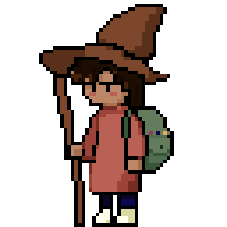

Welcome to the NEOCORTEX! The neocortex is the brain's outer layer, responsible for higher-order reasoning, planning, and the long-term storage of learned skills — the accumulated architecture of everything you've built. Here's a timeline of research and work experience.

RESEARCH EXPERIENCE
World Models Researcher
May 2025 – Present
Midcentury Labs
New York, NY
- Architected STEAM, a white-box benchmark for embodied foundation models, formalizing a cognitive capability taxonomy and designing 40+ diagnostic environments to isolate navigation, planning, spatial reasoning, object interaction, and environmental understanding capabilities in spatiotemporal agents.
- Developed 30+ interpretable evaluation metrics from simulator telemetry to quantify planning quality, recovery behavior, spatial reasoning, and execution efficiency with continuous rather than binary performance signals.
- Spearheaded PULSE, a benchmark for evaluating foundation world models through controlled pixel-space prediction diagnostics, developing protocols to assess temporal consistency, causal scene understanding, and robustness under distribution shift.
Computational Neuroscience Researcher
Jan 2025 – Present
Princeton University
Princeton, NJ
- Benchmarked BrainBERT against embeddings (GPT-2: 0.53, GloVe: 0.50, and Arbitrary: 0.47) for foundational model decoding of iEEG signal data.
- Designed decoding system for word classification (pre-/post-onset), achieving 38% greater classification accuracy than BrainBERT baseline.
- Built binary classification model for content vs. non-content words, extending to part-of-speech categories.
Quantum Algorithms Research Fellow
May 2024 – Aug 2024
National Science Foundation
Knoxville, TN
- Developed Exclusive-Sum-of-Products (ESOP) pipeline using Reduced Reed–Muller expansions to encode Boolean constraints in QAOA for combinatorial optimization problems.
- Demonstrated ESOP-QAOA outperforming baseline penalization in 64% of test cases from 3-21 node graphs.
- Improved approximation ratios 30.3% across 3,000+ graph instances, achieving superior performance in 51/54 test configurations.
Autonomous Vehicles Research Fellow
May 2023 – Aug 2023
National Science Foundation
Southfield, MI
- Designed and trained 3-layer CNN in TensorFlow/Keras for autonomous yaw-rate prediction, achieving statistically significant lane-keeping accuracy (p=0.009 absolute error, χ²=543.8 vs. critical 240.99) and completing 5/5 laps vs. 2.9/5 for the traditional computer vision baseline.
- Implemented multi-condition image preprocessing pipeline enabling robust lane detection across dynamic weather conditions.
- Trained YOLOv8 obstacle detection model on 412 images across varying weather conditions, achieving a precision-recall score of 0.995; integrated with ROS occupancy grid for real-time trajectory prediction and collision prevention between two autonomous vehicles.
WORK EXPERIENCE
Learning Assistant Mentor – Physics I & II
Sep 2025 – Present
Rutgers University
New Brunswick, NJ
- Co-led two recitations weekly for 100+ total students with a >95% effectiveness rating in student evaluations and a 10% improvement in average exam scores.
Learning Assistant – Mathematical Reasoning
Oct 2024 – Sep 2026
Rutgers University
New Brunswick, NJ
- Led weekly workshops for 30+ advanced mathematics students, providing detailed feedback on proofs and assessments, leading to a 34% improvement in average exam scores.
Data Science Intern
Jan 2025 – May 2025
XR Women
New Brunswick, NJ
- Built a dynamically updating 3D geospatial visualization pipeline to model global user distribution, enabling real-time demographic insights for an international XR community across 60+ countries.
- Framed and tested hypotheses on community growth dynamics, using data-driven methods to evaluate outreach and expansion strategies, leading to a 40% increase in engagement.
Applied AI/ML Researcher
Nov 2023 – Sep 2024
Project OWL Integrations
New York, NY
- Designed and implemented a Recurrent Convolutional Neural Network (RCNN) in Python to predict methane emission spikes and hazardous leak levels, improving early detection capabilities for environmental monitoring.
- Developed robust data preprocessing and feature engineering pipelines for time-series methane and temperature data, enhancing model accuracy and stability.